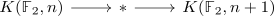
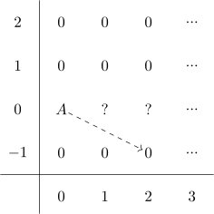

cohomology ring of K(F2,n) for a Z[1/2] module
Proposition
Let $A \in \mathbb{Z}[\frac{1}{2}]-\mathrm{Mod}$, then
\begin{align*}
H^*(K(\mathbb{F}_2,n), A) = A
\end{align*}
for $n \in \mathbb{N}^+$
Proof
induction basis
Here we use the universal coefficient Theorem for cohomology and get
\begin{align*}
H^*(\mathbb{R}\mathbb{P}^{\infty}, A) = A
\end{align*}
where we use $H^n(\mathbb{R}\mathbb{P}^{\infty}, A) \in \begin{cases} \mathbb{Z}/2 \mathbb{Z} \\ 0 \\ \end{cases}$, $\mathrm{Hom}_{\mathrm{Ab}}(\mathbb{F}_2, A) = 0$ and $\mathrm{Ext}^1(\mathbb{F}_2, A) = 0$.
induction step
we use the cohomology serre spectral sequence for the fiber sequence

Now we may use that $H^0(K(\mathbb{F}_2,2), A) = A$ since K(\mathbb{F}_2,2)$ is connected.
Then the spectral sequence looks like

and hence the questionmarks must all be $0$ since otherwise the differentials would survive.